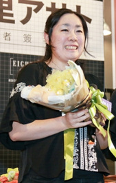

Author
Asato Asato (安里 アサトあさと あさと), also known as Asakura Toru, is a Japanese novelist most remarkable for her light novel series 86 EIGHTY-SIX published by ASCII Media Works under their Dengeki Bunko imprint.
Career
Asato started writing novels very early when she was still in middle school. Initially, she competed in the Kadokawa Beans Bunko Newcomer Awards, a light novel publishing label aimed towards girls. However, in 2014, she was able to reach the third round of the 21st Dengeki Novel Prize in the short-stories divison, and received encouragement from the Dengeki Bunko publishing house to write a work that would be distinctive and unique to the Dengeki Bunko imprint. As a product, she composed her first feature-length light novel "86 EIGHTY-SIX", inspired by real-life drone warfare and sci-fi horror stories. In 2016, she won the Grand Prize for her submission "86 EIGHTY-SIX" in the 23rd Dengeki Novel Prize. The novel, featuring illustrations by Shirabii, officially started publication in the Dengeki Bunko imprint of ASCII Media Works (Kadokawa) shortly after in the subsequent year. In 2018, she won the first place in the This Light Novel is Amazing! New Works category, simultaneously also winning the second place in the Bunkobon category.